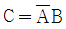
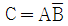
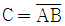
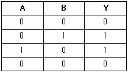
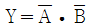
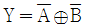

의료전자기능사 (2009-07-12 기출문제)
1과목: 임의 구분
1. 신경 세포를 이루는 기본 단위는 뉴런이다. 뉴런과 뉴런사이를 연결해 주는 연접 부위를 무엇이라 하는가?
- 축색돌기
- 세포
- 뉴런
- 시냅스
(정답률: 93%)

2. 생체에서 발생하는 전위는 극히 미약하여 생체 신호의 계측이 용이하지 않다. 또한 인간을 대상으로 하기 때문에 안전성을 충분히 고려하여 측정이 이루어져야 하는데, 생체 전기 현상에 이용되는 증폭기 중, 이 때 필요한 증폭기는?
- 차동 증폭기
- 전치 증폭기
- 고감도 증폭
- 고입력 임피던스 증폭기
(정답률: 79%)
3. 청진에 의하여 듣기가 곤란한 심음의 구성으로 옳은 것은?
- 1심음과 2심음
- 1심음과 3심음
- 2심음과 4심음
- 3심음과 4심음
(정답률: 83%)
4. 다음 중 세포의 활동전압에 대한 설명이 아닌 것은?
- 역치 이하의 저분극에서 발생되는 전압 이다.
- 신경, 근육세포에서 먼 거리까지 빨리 전달하는 역할을 한다.
- 신경세포, 근육세포, 감각세포, 분비세포 등 세포막에서 발생하는 것이다.
- 효과기 반응의 조절, 근육수축, 신경전달물질과 호르몬의 분비 등과 같은 역할을 한다.
(정답률: 78%)
5. 다음 중 생체신호 계측기기에 필요한 특성이 아닌 것은?
- 정확성
- 재현성
- 정밀성
- 표류성
(정답률: 87%)
6. 다음 중 아날로그 신호에 대한 설명으로 옳은 것은?
- “0”과“1”로 구성된 이산적인 데이터
- 음성과 같은 이산적인 변이형태를 지닌 생체신호
- 전압과 시간에 의존하여 이산적으로 변화하는 물리량
- 전압과 전류가 시간에 의존하여 연속적으로 변화하는 물리량
(정답률: 81%)
7. 자기 공명현상과 단층촬영기술을 접합시킨 자기공명영상(MRI)의 특성이 아닌 것은?
- 인체의 모든 방향의 단층 상을 볼 수 있다.
- 연부조직을 세밀하게 그려내는데 효과적이다.
- 생리적 현상 및 신체의 각종 신진대사를 관찰할 수 있다.
- 세포 내부의 변화까지 살릴 수 있어 해부학에서도 유효하다.
(정답률: 50%)
8. 일차뼈되기중심과 이차뼈되기중심에 있는 연골로서 뼈의 길이 성장이 일어나는 것은?
- 해면뼈(sponge bone)
- 치밀뼈(copact bone)
- 뼈끝판(epiphyseal plate)
- 관절연골(articular cartilage)
(정답률: 77%)
9. 다음 중 생체신호에 대한 의미가 옳지 않은 것은?
- ECG - 심전도
- EEG - 뇌전도 혹은 뇌파
- EMG - 근전도
- EKG - 심음도
(정답률: 86%)
10. 전압이득이 각각 40[dB]와 20[dB]인 증폭기 2개를 다음 그림과 같이 연결하였다. 합성전압이득은?
- 0[dB]
- 20[dB]
- 30[dB]
- 60[dB]
(정답률: 89%)
11. 40[dB]의 전압이득을 갖는 증폭기의 입력전압이 1[mV] 일 때 출력전압은?
- 1[mV]
- 10[mV]
- 100[mV]
- 1000[mV]
(정답률: 71%)
12. 다음 중 생체신호와 측정전극이 옳지 않은 것은?
- 뇌전도 표면전극으로 측정한다.
- 근전도는 표면전극으로 측정한다.
- 심음도는 표면전극으로 측정한다.
- 안구전도는 표면전극으로 측정한다.
(정답률: 76%)
13. 호흡기 기능평가법에 분포능(distribytion)에 대한 설명을 옳은 것은?
- 폐 내에 방사선이 모세혈관으로 전달되는 기능
- 외부공기가 기도를 통하여 폐포로 잘 전달되는 기능
- 폐 내에서 공기가 폐포간에 균형있게 분포하는 기능
- 폐포 내 공기와 폐 모세혈관 내 혈액 간에 O2, CO2를 잘 교환하는 기능
(정답률: 74%)
14. 다음 중 안구의 움직임을 검출하고자 할 때 측정하는 생체신호는?
- 심전도(ECG)
- 근전도(EMG)
- 위전도(ECG)
- 안전도(EOG)
(정답률: 92%)
15. 다음 중 세포막을 구성하고 있는 주요 성분은?
- 탄수화물과 섬유소
- 지질과 탄수화물
- 단백질과 탄수화물
- 단백질과 지질
(정답률: 86%)
16. 다음 중 해부학적 평면의 설명으로 옳지 않은 것은?
- 정중면 - 우리 몸을 앞뒤 대칭을 H 이등분하여 나누는 면이다.
- 시상면 - 우리 몸을 전후 방향인 세로로 절단해 인체 좌우로 나누는 면이다.
- 관상면 - 우리 몸을 이마에 평행이 되게 나누는 면이다.
- 횡단면 - 우리 몸을 위, 아래로 나누는 면으로 지면에 수평이 되게 나누므로 수평면이라고도 한다.
(정답률: 73%)
17. 혈압의 직접측정법에 대한 설명이 아닌 것은?
- 혈관 내로 카데터 삽입
- 혈압을 실시간을 계측
- 말단(팔) 부위에 압박주머니를 부착한 후 압력 증가
- 카데터에 스트레인 게이지 타입의 압력센서를 연결하여 혈압 파형 계측
(정답률: 80%)
18. 다음 중 뼈의 기능에 해당하지 않는 것은?
- 운동 역할
- 무기물의 생성 역할
- 조직의 지지대 역할
- 내부 장기 및 신경 근육의 보호 역할
(정답률: 84%)
19. 다음 중 위(stomach)의 의미를 가진 의학 용어는?
- epi-
- gastr-
- hetero-
- cardi-
(정답률: 69%)
20. 다음 중 의공학의 기술에 해당하지 않는 것은?
- 생체 모델링 및 시뮬레이션
- 생체 신호 처리
- 의료 영상 기기
- 생체 건축 공학
(정답률: 90%)
2과목: 임의 구분
21. 생체 전기 신호 측정과 관련하여 이온에 의한 전류를 자유전자에 의한 전류로 변환해주는 것은?
- 전극
- 기억소자
- 증폭기
- 압전소자
(정답률: 74%)
22. 다음 중 오실로스코프로 측정이 불가능한 것은?
- 전압
- 위상
- 코일의 온도
- 주파수
(정답률: 89%)
23. 다음 중 단위에 사용하는 배수의 연결이 옳지 않은 것은?
- T(테라) - 109
- k(킬로) - 103
- m(밀리) - 10-3
- n(나노) - 10-9
(정답률: 83%)
24. 유도성 센서의 동작원리가 아닌 것은?
- 자기저항
- 상호유도
- 차동변환기
- 정전용량
(정답률: 63%)
25. 10Ω의 전구를 200[v]의 전원으로 3시간 동안 사용하였을 때 소비된 전력량은?
- 6[kWh]
- 12[kWh]
- 20[kWh]
- 200[kWh]
(정답률: 68%)
26. 반가산기에서 입력이 A와 B일 때 반올림 되는 캐리 즉, C의 출력 논리식으로 옳은 것은?
- C = AB



(정답률: 74%)
27. 전하가 가지고 있는 전기의 양을 무엇이라 하는가?
- 전하량
- 전류량
- 전압량
- 전위량
(정답률: 86%)
28. 다음 중 서미스터의 특성에 대한 설명으로 옳지 않은 것은?
- 응답속도가 빠르다.
- 국부 온도측정이 불가능하다.
- 소형으로 제작이 가능하다.
- 저항이 아주 높아서 유도전극선의 저항을 무시할 수 있다.
(정답률: 69%)
29. 다음 중 압전센서의 활동 용도가 아닌 것은?
- 시음측정
- 혈압측정
- 혈류측정
- 체온측정
(정답률: 72%)
30. 다음 중 정류형 계기는 어느 값을 지시하는가?
- 평균값
- 실효값
- 파형률
- 파고율
(정답률: 78%)
31. 다음 중 나사에 대한 설명으로 옳은 것은?
- 작은 축방향의 힘으로 큰 회전 모멘트를 얻을 수 있다.
- 작은 회전 모멘트로 축방향의 큰 힘을 얻을 수 있다.
- 작은 마찰력으로 큰 모멘트를 얻을 수 있다.
- 작은 모멘트로 큰 마찰력을 얻을 수 있다.
(정답률: 65%)
32. 다음 중 인체에 사용하는 전극의 재료로 적당하지 않은 것은?
- 염화은(AgCI)
- 백급(Pt)
- 금(Au)
- 철(Fe)
(정답률: 77%)
33. 다음 중 진성 반도체의 특성으로 옳은 것은?
- 온도가 상승하면 저항이 증가한다.
- 진성 반도체에 불순물을 섞으면 저항이 증가한다.
- 전기적 전도성은 도체와 부도체의 상위 정도이다.
- 온도가 절대온도 0도 정도의 낮은 상태에서는 절연체가 된다.
(정답률: 67%)
34. 다음 중 30[C]의 전하가 이동하여 210[J]의 일을 하였다면, 이때의 전위차는 얼마인가?
- 0.07[V]
- 0.7[V]
- 7[V]
- 70[V]
(정답률: 84%)
35. 코일에 유도되는 전압의 크기를 계산할 수 있는 기전력에 관련한 법칙은?
- 패러데이 법칙
- 쿨롱의 법칙
- 옴의 법칙
- 키르히호프의 법칙
(정답률: 75%)
36. A, B 두 개의 입력 중 어느 하나라도 “1” 일 경우에 출력이 “1” 이 되는 논리 게이트는?
- AND
- OR
- NAND
- NOR
(정답률: 73%)
37. 다음 나사의 종류 중 한쪽 방향으로 강하고 센 힘을 전달하는 나사는?
- 둥근나사
- 톱니나사
- 사각나사
- 사다리꼴나사
(정답률: 73%)
38. 전압계의 허용오차에서 1.0 급의 경우는 허용오차를 몇[%]로 나타내는가?
- ± 0.5
- ± 1.0
- ± 1.2
- ± 1.5
(정답률: 76%)
39. 직렬회로에서 전압이 50[V]인 회로에서 5[A]의 전류가 흐르기위해서 필요한 저항의 크기는 얼마인가?
- 40Ω
- 30Ω
- 20Ω
- 10Ω
(정답률: 86%)
40. 트랜지스터(Tr)의 3개의 단자 이름이 아닌 것은?
- 캐소드(cathode)
- 컬렉터(collector)
- 베이스(base)
- 이미터(emitter)
(정답률: 89%)
3과목: 임의 구분
41. 다음 중 의료기기의 생물학적 재평가가 요구되는 내용으로 옳지 않은 것은?
- 제품의 사용횟수의 변화
- 저장중인 완제품의 변화
- 제품의 사용목적의 변화
- 제품 원자재의 출처나 사양의 변화
(정답률: 78%)
42. 다음 중 의료기관의 개설자 또는 관리자의 진료에 관한 기록 보존 기간을 잘못 연결한 것은?
- 진단서 등의 부본 - 5년
- 처방전 - 2년
- 진료기록부 - 10년
- 환자 명부 - 5년
(정답률: 62%)
43. 심박동수가 60BPM 이고, 1회 심박출량이 70㎖/beat 인 성인의 심박출량(CO) 표기로 옳은 것은?
- 70㎖
- 70㎖/beat
- 4.2ℓ
- 42ℓ/min
(정답률: 68%)
44. 마취기 시스템의 구성요소가 아닌 것은?
- 증발기
- 통풍기
- 청소기 시스템
- 응축기
(정답률: 65%)
45. 다음 중 정보사회의 특징에 대한 설명을 옳지 않은 것은?
- 정보과학, 정보기술이 급속하게 진보한다.
- 유통되는 정보의 양이 폭발적으로 증가한다.
- 인간의 존엄성과 자유에 대한 기치추구가 제한되고 통제된다.
- 사회활동에서 고도의 정보통신 기술이 활용되고 자동화가 촉진되어 노동의 개념이 달라진다.
(정답률: 86%)
46. 다음 중 연성내시경(flexible endoscope)의 구성요소가 아닌 것은?
- CCD
- 광원
- 안테나
- 유리섬유
(정답률: 84%)
47. 치료용 기기만으로 바르게 짝지어진 것은?
- 전기 수술기, 심전계
- 인공 호흡기, 뇌파계
- 전기 수술기, 인공 호흡기
- 심실 세동 제거기, 환자감시 장치
(정답률: 75%)
48. 초음파 의료기기의 사용 중, 결석의 탐사와 위치결정 그리고 분쇄상태를 확인할 때는 X-선을 이용하는 방식과 초음파를 이용하는 방식이 있다. 다음 중 초음파를 사용하는 기기의 특성이 아닌 것은?
- 방사선 노출 위험이 없다.
- X-선 투과성 결석도 발견할 수 있다.
- 뼈와 겹치는 부분의 결석 분쇄도 가능하다.
- 가격이 저렴하다.
(정답률: 64%)
49. 청력검사기에서 신호음으로 사용하는 신호의 파형은?
- 톱니파
- 삼각파
- 구형파
- 사인파
(정답률: 65%)
50. 환자기록의 개념을 위한 원형적인 코드체계이며 3자리 코드를 근간으로 하고 있는 분류체계는?
- ICD(국제질병분류)
- SNOMED(체계화된 의학 및 수의학용 명명법)
- ICPC(국제의료행위분류)
- UMLS(통일의학용어시스템)
(정답률: 76%)
51. 입원환자가 400명인 종합병원의 경우, 최소한으로 필요한 당직의사의 수는 몇 몇인가?
- 1명
- 2명
- 4명
- 10명
(정답률: 81%)
52. 다음 중 컴파일(Compile) 방식의 언어가 아닌 것은?
- FORTRAN
- C
- PASCAL
- BASIC
(정답률: 78%)
53. 주로 중환자실, 신생아실, 분만실이나 회복실에서 사용하는 기기로서 환자의 심전도, 혈압, 호흡, 체온, 혈중산소포화농도 등을 수치나 파형으로 나타내는 기기는?
- 분만감시장치
- 심전계
- 뇌전계
- 환자감시장치
(정답률: 84%)
54. 다음 중 의료기관을 개설할 수 없는 사람은?
- 임상병리사
- 조산사
- 치과의사
- 한의사
(정답률: 81%)
55. 다음 진리표의 결과를 가지는 논리식은?

- Y=A·B
- Y=A⊕B


(정답률: 78%)
56. 치료 및 재활용으로 쓰이는 전기자극은 전원장치에서 직류나 교류 전원을 신호발생기에 공급하여 생성된다. 이 신호 발생기의 구성요소가 아닌 것은?
- 증폭기
- 여과기
- 변압기
- 정류기
(정답률: 53%)
57. 다음 중 연산장치가 아닌 것은?
- 누산기
- 가산기
- 보수기
- 프로그램 계수기
(정답률: 83%)
58. 환자의 진료, 의학교육, 의학연구 및 의료경영에 필요한 각종의 정보를 효율적으로 체계화하여 관리하는 학문은?
- 재택진료학
- 원격의료학
- 의료정보학
- 의료영상학
(정답률: 85%)
59. 다음 중 의료기기에 의한 장애 형태가 아닌 것은?
- 유해물질, 병원체의 오염으로 인함 세균 감염
- 조직에서의 저항성 발열로 인한 수분부족 현상
- 기기로부터 방출된 에너지로 인한 X-레이 감염
- 기기성능의 결함, 정지로 인한 가동시 환자 진료의 위험 초래
(정답률: 77%)
60. 다음 중 양전자방출단층촬영장치(PET)의 기전으로 옳은 것은?
- 패러데이(Farday) 법칙
- 소멸(Annihilation) 현상
- 비오-사바르(Biosaver) 법칙
- 슈테판-볼쯔만(Stephan-Boltman)법칙
(정답률: 72%)